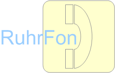

|  | Seit Gründung der RuhrFon GmbH im Jahre 2003 erfreuen unsere günstigen Telefontarife das gesamte Ruhrgebiet. Rund um die Uhr haben wir interessante Minutenpreise für Privat- und und Unternehmenskunden im Angebot, die es Ihnen erlauben, in Ruhe und zu jeder Zeit mit Freunden, Familienangehörigen oder Kunden zu telefonieren. Unser Tarifsystem ist einfach und auf wenige Tarife verteilt. |
| Stadt | Privatkunden | Geschäftskunden |
|---|---|---|
| 7 | 1447 | 207 |
| Bochum | 153 | 32 |
| Düsseldorf | 506 | 0 |
| Dortmund | 225 | 64 |
| Duisburg | 196 | 37 |
| Essen,Ruhr | 233 | 43 |
| Gelsenkirchen | 70 | 23 |
| Herne,Westf | 64 | 8 |